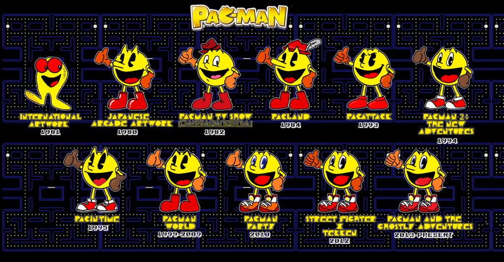
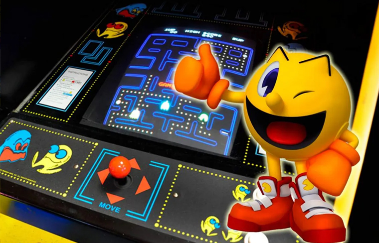

Pac-Man, el videojuego que revolucionó el mundo.
El mundo de los videojuegos era muy distinto hace cuatro décadas, lejos de las consolas de última generación, las computadoras que cuestan más que un coche y los smartphones que cocinan/compran/hablan por ti. Aquel periodo fue escenario de la aparición de juegos que, pese a sus limitaciones técnicas, se convirtieron en títulos de culto.
El también conocido como "Comecocos" fue ideado por el japonés Toru Iwatani, quien por entonces trabajaba en la desarrolladora Namco e imaginó al personaje mientras comía una pizza y vio esta sin una porción. Ese sería el origen de la inconfundible figura del héroe amarillo.
Para conocerlo todo sobre el videojuego, pulse aquí.
Aquí podéis ver un vídeo del "Padre del Comecocos" narrando de dónde nació su idea:
Si os hemos presentado a su padre, no podemos olvidarnos de su "Compañera Sentimental", con lo cual, os presentamos a Ms. Pac-Man:
Para terminar, un vídeo curioso de una partida perfecta y el propio juego para que intentéis replicarla. ¿Te atreves?
Para terminar, un vídeo curioso de una partida perfecta y el propio juego para que intentéis replicarla. ¿Te atreves?